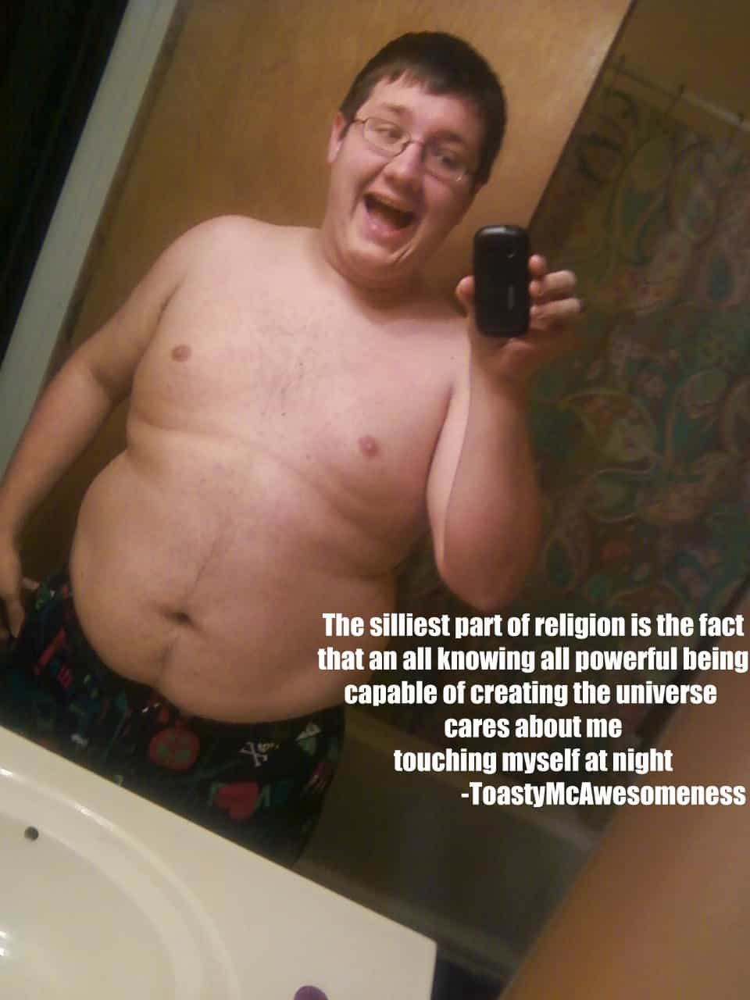

Samseau is a player philosopher psychologist who enjoys a good discussion. You can follow him on Twitter.


Virtually every religion that has existed, or exists today, strongly condemns gluttony. Given that religions evolve culturally over hundreds of years, there’s probably a good reason why all of them shame fatties.
Before we talk about these reasons, here’s a quick breakdown of the world’s major religions.

Do not join those who drink too much wine
or gorge themselves on meat,
for drunkards and gluttons become poor,
and drowsiness clothes them in rags.
Do you not know that your bodies are temples of the Holy Spirit, who is in you, whom you have received from God? You are not your own; you were bought at a price. Therefore honor God with your bodies.
The Old Testament says fatties are losers and the New Testament thinks fatties are a disgrace to God. ‘Nuff said.

The entire month of Ramadan is dedicated to fasting. Fasting is a regular and important feature of Islam that teaches self-control and self-respect:
O you who have believed, decreed upon you is fasting as it was decreed upon those before you that you may become righteous – (link)
[Fasting for] a limited number of days. So whoever among you is ill or on a journey [during them] – then an equal number of days [are to be made up]. And upon those who are able [to fast, but with hardship] – a ransom [as substitute] of feeding a poor person [each day]. And whoever volunteers excess – it is better for him. But to fast is best for you, if you only knew. (link)
If only, if only our American fatties knew that to fast (i.e. abstain from eating) is best for them. If they only knew.
Buddhists believe that avoiding attachment, translated as acquisition below, to any worldly thing is the way of wisdom and peace.
“Now, when a monk — maintaining restraint over the six spheres of contact, knowing that ‘Acquisition is the root of stress’ — is free from acquisition, released in the total ending of acquisition, it’s not possible that, with regard to acquisition, he would stir his body or arouse his mind. (link)
Fatties need to lose their attachment to 7/11, McDonald’s, Wendy’s, Burger King, and KFC.
So, having established that the world’s major regions all believe fat is evil, what do atheists up doing?
GALLUP – Very Religion Americans Lead Healthier Lives
Is it any surprise? With nothing left to believe in, atheists will fill up their spiritual void with cheap processed food and confectionery sugars. Just look at the non-believers and see for yourself:
Body fat percentage: 50%

Body fat percentage: 35%

Body fat percentage: 70%
Hell, there are even blogs dedicated to being a fat atheist. I don’t think any of this is a coincidence. I think the successful religions have been successful precisely because they make people take care of themselves, and most importantly, by keeping women slim it attracts more men to the religion. Meanwhile, atheism leads to despair and big-waistlines.
Read Next: The American Woman Has Hit An All-Time Low
{kind=link}